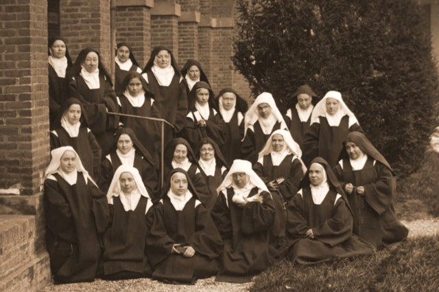

Biografia
Santa Terezinha do Menino Jesus, nascida Marie Françoise Thérèse Martin em 2 de janeiro de 1873, em Alençon, França, foi a última de nove filhos de Louis e Zélie Martin. Cresceu em uma família profundamente religiosa. Após a morte de sua mãe, Terezinha ingressou no Carmelo de Lisieux aos 15 anos, seguindo a tradição de suas irmãs mais velhas, que já haviam abraçado a vida monástica, e adotou o nome religioso Irmã Terezinha do Menino Jesus e da Sagrada Face.
Vida no Carmelo
No Carmelo, Terezinha viveu uma vida de simplicidade e humildade, buscando a santidade através das tarefas cotidianas e da oração. Sua espiritualidade, conhecida como "Pequena Via", enfatizava a importância das pequenas ações feitas com grande amor como meio de alcançar a santidade.
Dentro dos muros do convento, Terezinha encontrou um ambiente propício para o desenvolvimento de sua espiritualidade única. Sua prática cotidiana era caracterizada por uma busca constante pela perfeição na vivência dos votos religiosos de pobreza, castidade e obediência. Ela abraçou uma vida de simplicidade e humildade, encontrando Deus nas tarefas aparentemente mundanas e nas relações com suas irmãs de comunidade.
Além disso, Terezinha dedicou-se intensamente à oração contemplativa, buscando uma união mais profunda com Deus. Suas experiências místicas e seu amor pela Sagrada Face de Jesus foram temas recorrentes em sua espiritualidade.
A vida de clausura no Carmelo não a impediu de impactar o mundo exterior. As cartas e poemas que escreveu, especialmente sua autobiografia "História de uma Alma", revelaram sua espiritualidade e contribuíram significativamente para a literatura espiritual católica.
Falecimento e Canonização
O fim da vida de Santa Terezinha do Menino Jesus foi marcado por uma luta contra a tuberculose, que a levou ao seu falecimento em 30 de setembro de 1897, no Carmelo de Lisieux, aos 24 anos de idade. Contudo, sua morte foi caracterizada por uma serenidade e aceitação notáveis, testemunhando a profundidade de sua confiança na misericórdia divina.
Sua canonização em 1925 reforçou a influência duradoura de Santa Terezinha. Ela é venerada como a padroeira das missões, e seu legado ecoa através da "Pequena Via", uma espiritualidade simples e acessível que continua a inspirar fiéis em todo o mundo. O dia festivo dedicado a Santa Terezinha do Menino Jesus é celebrado em 1º de outubro, recordando a vida e o testemunho dessa santa que encontrou a grandeza na humildade e na confiança inabalável em Deus.